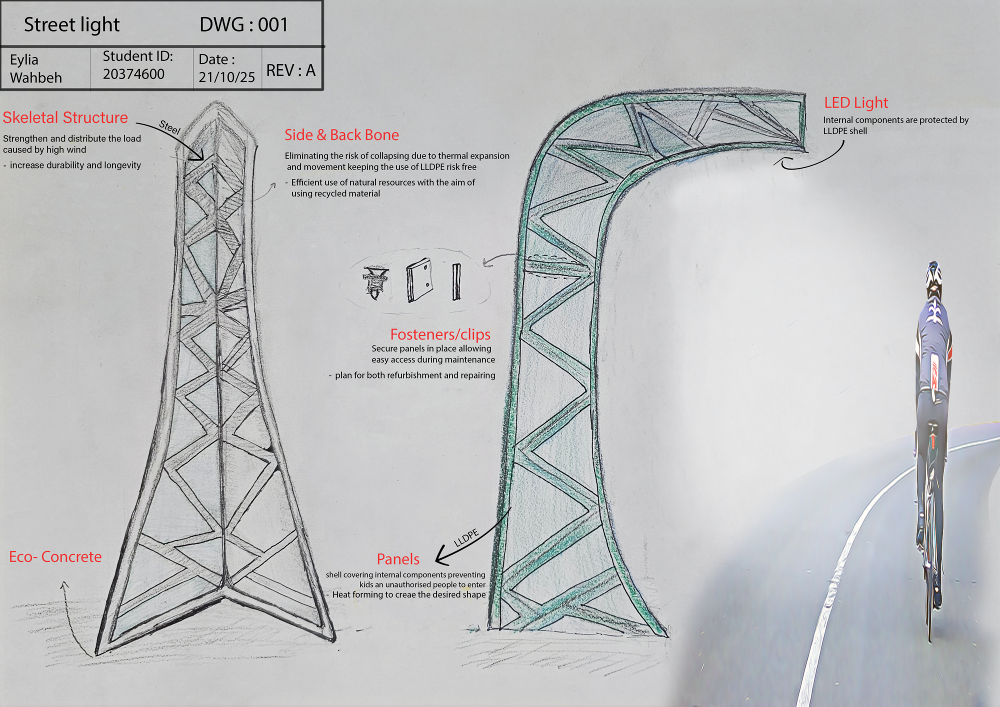

Thought is friction.
If you have to stop and work out how to use something, the design has failed. I aim for simple, and keep going until the product disappears into the task. I’m an industrial designer who takes it all the way to a working prototype.
Drawing set: six projects
Every sheet opens the full project.

Only lights up when it’s whole
ProjectLumina
BriefInterlocking light stool, Sydney VIVID
Sheet01
SideKickWorking 1:1 prototype. Shown in person while the IP is sorted.
ProjectSideKick
BriefWearable for tradies, Honours thesis
Sheet02

Tool slots cut to fit
ProjectRolo’no
BriefLeather tool apron that rolls up
Sheet03

Home, projected in orbit
ProjectEarthlight
BriefWellbeing system for astronauts
Sheet04

Panels clip off for repair
ProjectCircular
BriefRedesigns for repair and reuse
Sheet05
ResMedIndustry medical brief under NDA. Walkthrough on request.
ProjectResMed
BriefComfort-led medical concept
Sheet06
General notes
I map the full user journey, every step, workaround and frustration, and design each interaction around the user, not the other way round.
Looking forIndustrial and product design work in Sydney